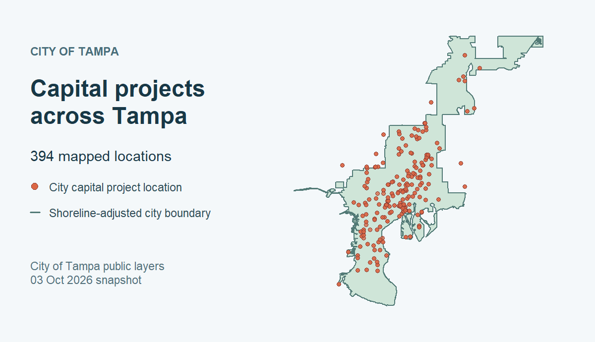

Explore infrastructure and capital projects
Source:vignettes/infrastructure-projects.Rmd
infrastructure-projects.RmdSummarize Tampa’s public capital-project map by type, phase, and neighborhood. Several locations may share one project ID.
Catalog examples run offline. Run retrieval and chart code with internet access.
Set up and find a source
Install the package, knitr for tables, and
ggplot2 for the chart:
install.packages("tampaBayOpenData")
install.packages("knitr") # for the summary tables
install.packages("ggplot2") # optional chart dependencySearch the offline catalog:
library(tampaBayOpenData)
choices <- tbod_search_datasets("project", source = "checked")
knitr::kable(choices[, c("canonical_id", "publisher", "title", "category")],
caption = "Checked project-related layers in this package")| canonical_id | publisher | title | category |
|---|---|---|---|
| tampa-capital-projects | City of Tampa | Capital improvement projects | Infrastructure |
| st-pete-public-works-projects | City of St. Petersburg | St. Petersburg mapped public works projects | Infrastructure |
Read the scope note. verified dates an endpoint check,
not a project update.
info <- tbod_dataset_info("tampa-capital-projects")
info[c("title", "publisher", "source_url", "verified", "scope_note")]
#> $title
#> [1] "Capital improvement projects"
#>
#> $publisher
#> [1] "City of Tampa"
#>
#> $source_url
#> [1] "https://tampa.maps.arcgis.com/home/item.html?id=2226a20de08641e38cedd1c2d7cac69e"
#>
#> $verified
#> [1] "2026-09-29"
#>
#> $scope_note
#> [1] "The service description says its definition query selects Show to Public = Yes, while the layer metadata does not expose that definition expression. Coordinates use ArcGIS WKID 103023 / latestWKID 6443, in feet, rather than the Web Mercator CRS used by the other selected layers."Inspect the available fields
Read the saved schema. Retrieval stops if the live schema is incompatible.
schema <- tbod_schema("tampa-capital-projects")
fields <- c("OBJECTID", "projid", "projname", "projtype", "projphase",
"status", "Neighborhood", "estcost", "actcost", "planstart",
"actend")
field_guide <- schema$fields[
schema$fields$name %in% fields,
c("name", "type", "alias")
]
knitr::kable(field_guide, caption = "Saved Tampa capital-project field schema")| name | type | alias |
|---|---|---|
| OBJECTID | esriFieldTypeOID | OBJECTID |
| projid | esriFieldTypeString | Project Identifier |
| projname | esriFieldTypeString | Project Name |
| projtype | esriFieldTypeString | Project Type |
| planstart | esriFieldTypeDate | Planned Start Date |
| estcost | esriFieldTypeDouble | Estimated Cost |
| projphase | esriFieldTypeString | Project Phase |
| actend | esriFieldTypeDate | Actual End Date |
| actcost | esriFieldTypeDouble | Actual Cost |
| status | esriFieldTypeString | Status |
| Neighborhood | esriFieldTypeString | Neighborhood |
OBJECTID identifies a feature; projid may
repeat across locations. Type, phase, status, and costs are publisher
attributes. Dates with unknown time zones may remain raw
milliseconds.
Retrieve records
Retrieve all features and check completeness before comparing categories.
projects <- tryCatch(
tbod_get_dataset(
"tampa-capital-projects",
fields = fields,
total_timeout = 180
),
error = function(e) {
stop("Capital-project retrieval failed; no summary was produced: ",
conditionMessage(e), call. = FALSE)
}
)
source <- tbod_provenance(projects)
if (!isTRUE(source$complete) ||
!isTRUE(source$returned_rows == nrow(projects)) ||
!isTRUE(source$matched_rows == nrow(projects))) {
stop("The capital-project result is incomplete or its row counts disagree; ",
"do not summarize it.")
}
if (nrow(projects) == 0L) {
stop("The publisher returned no mapped capital-project features.")
}
source[c("publisher", "source_url", "retrieved_at", "matched_rows",
"returned_rows", "complete", "integrity")]projects has one row per feature and no geometry
column.
Save the download details. Live attributes can change between requests:
dir.create("analysis-output", showWarnings = FALSE)
saveRDS(list(data = projects, provenance = source),
"analysis-output/tampa-capital-projects.rds")Inspect column types, values, and missing data:
str(projects[c("OBJECTID", "projid", "projtype", "projphase", "status",
"Neighborhood", "estcost", "actcost", "planstart", "actend")])
utils::head(projects[c("OBJECTID", "projid", "projname", "projtype",
"projphase", "status")], 8)
vapply(projects[c("projid", "projtype", "projphase", "status", "estcost",
"actcost", "actend")], function(x) sum(is.na(x)), integer(1))Summarize
Keep blank labels as (Missing). Set aside blank IDs and
suspected placeholders (N/A, NA,
0000000); these are working rules, not official codes.
label_or_missing <- function(x) {
value <- trimws(as.character(x))
value[is.na(value) | value == ""] <- "(Missing)"
value
}
projects$project_type <- label_or_missing(projects$projtype)
projects$phase_label <- label_or_missing(projects$projphase)
projects$status_label <- label_or_missing(projects$status)
projects$neighborhood_label <- label_or_missing(projects$Neighborhood)
working_id <- trimws(as.character(projects$projid))
blank_id <- is.na(working_id) | working_id == ""
placeholder_id <- !blank_id & toupper(working_id) %in%
c("N/A", "NA", "0000000")
working_id[blank_id | placeholder_id] <- NA_character_
projects$working_id <- working_idCount feature rows by type, phase, and the source’s neighborhood label:
type_counts <- as.data.frame(table(projects$project_type),
stringsAsFactors = FALSE)
names(type_counts) <- c("project_type", "mapped_features")
type_counts <- type_counts[
order(-type_counts$mapped_features, type_counts$project_type), , drop = FALSE
]
knitr::kable(type_counts, caption = "Mapped feature rows by source project type")
phase_counts <- as.data.frame(
table(projects$project_type, projects$phase_label),
stringsAsFactors = FALSE
)
names(phase_counts) <- c("project_type", "phase", "mapped_features")
phase_counts <- phase_counts[phase_counts$mapped_features > 0L, , drop = FALSE]
phase_counts <- phase_counts[
order(-phase_counts$mapped_features, phase_counts$project_type), , drop = FALSE
]
knitr::kable(utils::head(phase_counts, 15),
caption = "Most common type and phase combinations, by feature row")
status_counts <- as.data.frame(table(projects$status_label),
stringsAsFactors = FALSE)
names(status_counts) <- c("source_status", "mapped_features")
status_counts <- status_counts[
order(-status_counts$mapped_features, status_counts$source_status), , drop = FALSE
]
knitr::kable(utils::head(status_counts, 15),
caption = "Most common source status labels, by feature row")
neighborhood_counts <- as.data.frame(table(projects$neighborhood_label),
stringsAsFactors = FALSE)
names(neighborhood_counts) <- c("neighborhood", "mapped_features")
neighborhood_counts <- neighborhood_counts[
order(-neighborhood_counts$mapped_features, neighborhood_counts$neighborhood),
, drop = FALSE
]
knitr::kable(utils::head(neighborhood_counts, 10),
caption = "Top source neighborhood labels, by mapped feature row")mapped_features counts rows for each label or label
pair.
Plot the type counts:
if (!requireNamespace("ggplot2", quietly = TRUE)) {
stop("Install ggplot2 to draw this chart: install.packages('ggplot2')")
}
top_types <- utils::head(type_counts, 12)
print(ggplot2::ggplot(
top_types,
ggplot2::aes(x = stats::reorder(project_type, mapped_features),
y = mapped_features)
) +
ggplot2::geom_col(fill = "#276678", width = 0.72) +
ggplot2::coord_flip() +
ggplot2::labs(
title = "Mapped Tampa capital-project features by type",
subtitle = paste("Source retrieved",
format(source$retrieved_at, "%Y-%m-%d %H:%M UTC",
tz = "UTC")),
x = NULL, y = "Mapped feature rows",
caption = "City of Tampa public-facing capital-project layer; types are source labels"
) +
ggplot2::theme_minimal(base_size = 12) +
ggplot2::theme(panel.grid.major.y = ggplot2::element_blank()))Bars count mapped features, not distinct projects or budget amounts.
Archived map: 394 features retrieved October 3, 2026. The map script uses the City’s capital-project and shoreline-adjusted boundary layers.

Source: City of Tampa public ArcGIS capital-project and boundary layers, both recorded as CC0 in the checked catalog. The boundary is map context, not a legal survey. Multiple points can represent one project.
Check IDs and costs
Inspect cost values before using them. Zero actual cost may be a reporting convention rather than zero spending.
estcost holds reported estimates; actcost
holds reported actual costs.
Check repeated IDs and conflicting values before aggregating costs:
usable <- !is.na(projects$working_id)
rows_by_id <- split(which(usable), projects$working_id[usable])
if (length(rows_by_id) == 0L) {
warning("No usable project IDs; project-level cost review is unavailable.")
} else {
id_audit <- do.call(rbind, lapply(names(rows_by_id), function(id) {
rows <- projects[rows_by_id[[id]], , drop = FALSE]
estimates <- unique(rows$estcost[is.finite(rows$estcost)])
actuals <- unique(rows$actcost[is.finite(rows$actcost)])
phases <- setdiff(unique(rows$phase_label), "(Missing)")
statuses <- setdiff(unique(rows$status_label), "(Missing)")
data.frame(
working_id = id,
mapped_features = nrow(rows),
distinct_estimates = length(estimates),
distinct_actual_costs = length(actuals),
distinct_phases = length(phases),
distinct_statuses = length(statuses)
)
}))
checks <- data.frame(
measure = c("Mapped feature rows", "Rows without a usable project ID",
"Distinct usable IDs", "IDs on multiple feature rows",
"IDs with multiple nonmissing estimates",
"IDs with multiple nonmissing actual costs"),
count = c(nrow(projects), sum(!usable), nrow(id_audit),
sum(id_audit$mapped_features > 1L),
sum(id_audit$distinct_estimates > 1L),
sum(id_audit$distinct_actual_costs > 1L))
)
knitr::kable(checks, caption = "Checks before any project-level interpretation")
needs_review <- id_audit[
id_audit$distinct_estimates > 1L |
id_audit$distinct_actual_costs > 1L |
id_audit$distinct_phases > 1L |
id_audit$distinct_statuses > 1L,
, drop = FALSE
]
needs_review <- needs_review[
order(-needs_review$mapped_features, needs_review$working_id), , drop = FALSE
]
knitr::kable(utils::head(needs_review, 10),
caption = "Example IDs with differing source attributes")
}distinct_* values above one flag disagreement within an
ID.
Get a publisher-supported rule for repeated IDs before counting projects or adding costs. Status, dates, and costs alone do not verify completion or final spending. The public map is only part of the City’s capital work.
Save the source details
Source: City
of Tampa capital projects. Check
tbod_dataset_info("tampa-capital-projects")$terms and save
your package version and retrieval provenance.
See coverage for catalog limits.